Model Comparison
The adjusted model removes whole dummy-variable groups that fail nested likelihood-ratio tests, plus ungrouped indicators that fail the Wald screen.
| model | features | roc_auc | average_precision | brier_score | ks_statistic | aic | bic | mcfadden_r2 |
|---|---|---|---|---|---|---|---|---|
| Full model | 24 | 0.8586 | 0.6963 | 0.1098 | 0.5807 | 23,443.4184 | 23,652.9518 | 0.3103 |
| Adjusted grouped-LR model | 21 | 0.8577 | 0.6947 | 0.1101 | 0.5815 | 23,531.4260 | 23,715.8154 | 0.3075 |
| Representative-sample adjusted model | 21 | 0.8567 | 0.6902 | 0.1108 | 0.5796 | 23,692.4433 | 23,876.8327 | 0.3028 |
| Weighted adjusted model | 21 | 0.7666 | 0.4583 | 0.1960 | 0.4240 | 37,099.1958 | 37,283.5851 | -0.0925 |
Sampling and Weighting Diagnostics
Representative Sample
Sampled 16,152 of 32,252 rows (50.1%) using stratified proportional sampling.
| stratum | full_count | sample_count | full_share | sample_share | share_diff | retained_share |
|---|---|---|---|---|---|---|
| 0 | A | EDUCATION | RENT | 785 | 392 | 0.0243 | 0.0243 | -0.0001 | 0.4994 |
| 0 | B | VENTURE | RENT | 757 | 378 | 0.0235 | 0.0234 | -0.0001 | 0.4993 |
| 0 | B | PERSONAL | RENT | 689 | 344 | 0.0214 | 0.0213 | -0.0001 | 0.4993 |
| 0 | A | VENTURE | RENT | 621 | 310 | 0.0193 | 0.0192 | -0.0001 | 0.4992 |
| 1 | B | DEBTCONSOLIDATION | OTHER | 2 | 2 | 0.0001 | 0.0001 | 0.0001 | 1.0000 |
| 0 | C | VENTURE | OTHER | 2 | 2 | 0.0001 | 0.0001 | 0.0001 | 1.0000 |
| 1 | A | VENTURE | MORTGAGE | 2 | 2 | 0.0001 | 0.0001 | 0.0001 | 1.0000 |
| 1 | B | VENTURE | MORTGAGE | 2 | 2 | 0.0001 | 0.0001 | 0.0001 | 1.0000 |
| 1 | E | PERSONAL | OWN | 2 | 2 | 0.0001 | 0.0001 | 0.0001 | 1.0000 |
| 0 | A | EDUCATION | OTHER | 2 | 2 | 0.0001 | 0.0001 | 0.0001 | 1.0000 |
| 1 | E | DEBTCONSOLIDATION | OTHER | 2 | 2 | 0.0001 | 0.0001 | 0.0001 | 1.0000 |
| 1 | B | DEBTCONSOLIDATION | OWN | 2 | 2 | 0.0001 | 0.0001 | 0.0001 | 1.0000 |
| 1 | C | PERSONAL | OTHER | 2 | 2 | 0.0001 | 0.0001 | 0.0001 | 1.0000 |
| 1 | B | PERSONAL | OTHER | 2 | 2 | 0.0001 | 0.0001 | 0.0001 | 1.0000 |
| 0 | F | MEDICAL | RENT | 2 | 2 | 0.0001 | 0.0001 | 0.0001 | 1.0000 |
| 1 | G | DEBTCONSOLIDATION | OWN | 2 | 2 | 0.0001 | 0.0001 | 0.0001 | 1.0000 |
| 0 | A | PERSONAL | RENT | 553 | 276 | 0.0171 | 0.0171 | -0.0001 | 0.4991 |
| 0 | C | DEBTCONSOLIDATION | RENT | 461 | 230 | 0.0143 | 0.0142 | -0.0001 | 0.4989 |
| 0 | C | EDUCATION | MORTGAGE | 405 | 202 | 0.0126 | 0.0125 | -0.0001 | 0.4988 |
| 0 | A | EDUCATION | MORTGAGE | 992 | 496 | 0.0308 | 0.0307 | -0.0000 | 0.5000 |
Numeric Balance
| feature | full_mean | sample_mean | full_median | sample_median | standardized_mean_diff |
|---|---|---|---|---|---|
| cb_person_cred_hist_length | 5.7710 | 5.6396 | 4.0000 | 4.0000 | -0.0327 |
| person_age | 27.6657 | 27.4900 | 26.0000 | 26.0000 | -0.0286 |
| person_emp_length | 4.7681 | 4.7312 | 4.0000 | 4.0000 | -0.0090 |
| person_income | 62,704.6956 | 62,406.5643 | 55,000.0000 | 55,000.0000 | -0.0087 |
| loan_amnt | 9,508.1344 | 9,459.3858 | 8,000.0000 | 8,000.0000 | -0.0079 |
| loan_int_rate | 11.0056 | 11.0110 | 10.9900 | 10.9900 | 0.0017 |
Inverse-Frequency Weights
Mean weight 1.0000; min 0.1275; max 126.4784; effective sample size 1219.
| stratum | count | mean_weight | min_weight | max_weight | total_weight |
|---|---|---|---|---|---|
| 0 | A | DEBTCONSOLIDATION | OTHER | 1 | 126.4784 | 126.4784 | 126.4784 | 126.4784 |
| 0 | C | EDUCATION | OTHER | 1 | 126.4784 | 126.4784 | 126.4784 | 126.4784 |
| 0 | C | HOMEIMPROVEMENT | OTHER | 1 | 126.4784 | 126.4784 | 126.4784 | 126.4784 |
| 1 | A | MEDICAL | OTHER | 1 | 126.4784 | 126.4784 | 126.4784 | 126.4784 |
| 1 | A | DEBTCONSOLIDATION | OTHER | 1 | 126.4784 | 126.4784 | 126.4784 | 126.4784 |
| 0 | E | EDUCATION | OTHER | 1 | 126.4784 | 126.4784 | 126.4784 | 126.4784 |
| 0 | G | VENTURE | RENT | 1 | 126.4784 | 126.4784 | 126.4784 | 126.4784 |
| 0 | E | VENTURE | OTHER | 1 | 126.4784 | 126.4784 | 126.4784 | 126.4784 |
| 0 | F | HOMEIMPROVEMENT | OWN | 1 | 126.4784 | 126.4784 | 126.4784 | 126.4784 |
| 0 | F | PERSONAL | OWN | 1 | 126.4784 | 126.4784 | 126.4784 | 126.4784 |
| 0 | F | VENTURE | OWN | 1 | 126.4784 | 126.4784 | 126.4784 | 126.4784 |
| 0 | D | EDUCATION | OTHER | 1 | 126.4784 | 126.4784 | 126.4784 | 126.4784 |
| 1 | D | HOMEIMPROVEMENT | OTHER | 1 | 126.4784 | 126.4784 | 126.4784 | 126.4784 |
| 1 | G | VENTURE | OWN | 1 | 126.4784 | 126.4784 | 126.4784 | 126.4784 |
| 1 | G | EDUCATION | OWN | 1 | 126.4784 | 126.4784 | 126.4784 | 126.4784 |
| 1 | D | PERSONAL | OTHER | 1 | 126.4784 | 126.4784 | 126.4784 | 126.4784 |
| 1 | D | VENTURE | OWN | 1 | 126.4784 | 126.4784 | 126.4784 | 126.4784 |
| 1 | E | EDUCATION | OTHER | 1 | 126.4784 | 126.4784 | 126.4784 | 126.4784 |
| 1 | E | HOMEIMPROVEMENT | OTHER | 1 | 126.4784 | 126.4784 | 126.4784 | 126.4784 |
| 1 | E | PERSONAL | OTHER | 1 | 126.4784 | 126.4784 | 126.4784 | 126.4784 |
Cross-Validation
Stratified folds estimate out-of-sample stability. Higher is better except for Brier score.
| model | metric | mean | std | min | max |
|---|---|---|---|---|---|
| Full model | roc_auc | 0.8569 | 0.0061 | 0.8506 | 0.8647 |
| Full model | average_precision | 0.6981 | 0.0087 | 0.6839 | 0.7040 |
| Full model | brier_score | 0.1099 | 0.0015 | 0.1081 | 0.1119 |
| Full model | ks_statistic | 0.5801 | 0.0092 | 0.5646 | 0.5870 |
| Full model | f1_score | 0.5869 | 0.0123 | 0.5671 | 0.5972 |
| Adjusted grouped-LR model | roc_auc | 0.8562 | 0.0063 | 0.8495 | 0.8648 |
| Adjusted grouped-LR model | average_precision | 0.6907 | 0.0111 | 0.6738 | 0.6997 |
| Adjusted grouped-LR model | brier_score | 0.1111 | 0.0017 | 0.1095 | 0.1133 |
| Adjusted grouped-LR model | ks_statistic | 0.5829 | 0.0064 | 0.5728 | 0.5882 |
| Adjusted grouped-LR model | f1_score | 0.5703 | 0.0122 | 0.5540 | 0.5855 |
| Representative-sample adjusted model | roc_auc | 0.8562 | 0.0061 | 0.8500 | 0.8646 |
| Representative-sample adjusted model | average_precision | 0.6883 | 0.0075 | 0.6806 | 0.6991 |
| Representative-sample adjusted model | brier_score | 0.1112 | 0.0016 | 0.1090 | 0.1133 |
| Representative-sample adjusted model | ks_statistic | 0.5818 | 0.0074 | 0.5725 | 0.5890 |
| Representative-sample adjusted model | f1_score | 0.5699 | 0.0084 | 0.5586 | 0.5805 |
| Weighted adjusted model | roc_auc | 0.7715 | 0.0083 | 0.7614 | 0.7815 |
| Weighted adjusted model | average_precision | 0.4695 | 0.0089 | 0.4606 | 0.4825 |
| Weighted adjusted model | brier_score | 0.1975 | 0.0040 | 0.1936 | 0.2029 |
| Weighted adjusted model | ks_statistic | 0.4368 | 0.0184 | 0.4180 | 0.4614 |
| Weighted adjusted model | f1_score | 0.5178 | 0.0107 | 0.5096 | 0.5358 |
Fold Results
| model | fold | n_test | roc_auc | average_precision | brier_score | ks_statistic | accuracy | precision | recall | f1_score |
|---|---|---|---|---|---|---|---|---|---|---|
| Full model | 1 | 6451 | 0.8647 | 0.7038 | 0.1081 | 0.5844 | 0.8544 | 0.7660 | 0.4837 | 0.5930 |
| Full model | 2 | 6451 | 0.8564 | 0.6839 | 0.1119 | 0.5784 | 0.8455 | 0.7345 | 0.4618 | 0.5671 |
| Full model | 3 | 6450 | 0.8513 | 0.6957 | 0.1107 | 0.5646 | 0.8532 | 0.7541 | 0.4901 | 0.5941 |
| Full model | 4 | 6450 | 0.8506 | 0.7040 | 0.1095 | 0.5858 | 0.8561 | 0.7722 | 0.4869 | 0.5972 |
| Full model | 5 | 6450 | 0.8613 | 0.7032 | 0.1091 | 0.5870 | 0.8519 | 0.7608 | 0.4728 | 0.5832 |
| Adjusted grouped-LR model | 1 | 6451 | 0.8648 | 0.6995 | 0.1095 | 0.5882 | 0.8481 | 0.7583 | 0.4505 | 0.5652 |
| Adjusted grouped-LR model | 2 | 6451 | 0.8554 | 0.6738 | 0.1133 | 0.5806 | 0.8420 | 0.7268 | 0.4477 | 0.5540 |
| Adjusted grouped-LR model | 3 | 6450 | 0.8512 | 0.6854 | 0.1124 | 0.5728 | 0.8473 | 0.7474 | 0.4583 | 0.5682 |
| Adjusted grouped-LR model | 4 | 6450 | 0.8495 | 0.6950 | 0.1108 | 0.5853 | 0.8509 | 0.7595 | 0.4671 | 0.5784 |
| Adjusted grouped-LR model | 5 | 6450 | 0.8602 | 0.6997 | 0.1096 | 0.5876 | 0.8522 | 0.7596 | 0.4763 | 0.5855 |
| Representative-sample adjusted model | 1 | 6451 | 0.8646 | 0.6991 | 0.1090 | 0.5871 | 0.8506 | 0.7545 | 0.4717 | 0.5805 |
| Representative-sample adjusted model | 2 | 6451 | 0.8586 | 0.6817 | 0.1116 | 0.5890 | 0.8456 | 0.7348 | 0.4625 | 0.5677 |
| Representative-sample adjusted model | 3 | 6450 | 0.8500 | 0.6806 | 0.1133 | 0.5725 | 0.8434 | 0.7311 | 0.4519 | 0.5586 |
| Representative-sample adjusted model | 4 | 6450 | 0.8506 | 0.6910 | 0.1107 | 0.5850 | 0.8488 | 0.7483 | 0.4671 | 0.5752 |
| Representative-sample adjusted model | 5 | 6450 | 0.8574 | 0.6892 | 0.1114 | 0.5753 | 0.8464 | 0.7403 | 0.4600 | 0.5674 |
| Weighted adjusted model | 1 | 6451 | 0.7780 | 0.4825 | 0.2029 | 0.4464 | 0.6790 | 0.3865 | 0.7914 | 0.5194 |
| Weighted adjusted model | 2 | 6451 | 0.7662 | 0.4616 | 0.1963 | 0.4194 | 0.6938 | 0.3933 | 0.7313 | 0.5115 |
| Weighted adjusted model | 3 | 6450 | 0.7614 | 0.4606 | 0.1936 | 0.4180 | 0.7034 | 0.3997 | 0.7030 | 0.5096 |
| Weighted adjusted model | 4 | 6450 | 0.7704 | 0.4706 | 0.2004 | 0.4387 | 0.6847 | 0.3875 | 0.7573 | 0.5127 |
| Weighted adjusted model | 5 | 6450 | 0.7815 | 0.4722 | 0.1942 | 0.4614 | 0.7126 | 0.4146 | 0.7573 | 0.5358 |
Segment Stability
Segment metrics show whether sampling or weighting improves stability across portfolio groups.
| model | segment | value | count | default_rate | mean_score | calibration_gap | roc_auc | average_precision | brier_score |
|---|---|---|---|---|---|---|---|---|---|
| Adjusted grouped-LR model | loan_grade | A | 10699 | 0.1002 | 0.1139 | 0.0137 | 0.8446 | 0.5289 | 0.0687 |
| Full model | loan_grade | A | 10699 | 0.1002 | 0.1122 | 0.0120 | 0.8466 | 0.5412 | 0.0681 |
| Representative-sample adjusted model | loan_grade | A | 10699 | 0.1002 | 0.1256 | 0.0254 | 0.8509 | 0.5467 | 0.0684 |
| Weighted adjusted model | loan_grade | A | 10699 | 0.1002 | 0.3929 | 0.2927 | 0.7725 | 0.2234 | 0.1842 |
| Adjusted grouped-LR model | loan_grade | B | 10347 | 0.1638 | 0.1652 | 0.0014 | 0.8276 | 0.5844 | 0.1018 |
| Full model | loan_grade | B | 10347 | 0.1638 | 0.1642 | 0.0004 | 0.8283 | 0.5936 | 0.1013 |
| Representative-sample adjusted model | loan_grade | B | 10347 | 0.1638 | 0.1561 | -0.0078 | 0.8304 | 0.5986 | 0.1014 |
| Weighted adjusted model | loan_grade | B | 10347 | 0.1638 | 0.4070 | 0.2431 | 0.7459 | 0.3033 | 0.1926 |
| Adjusted grouped-LR model | loan_grade | C | 6387 | 0.2093 | 0.2046 | -0.0048 | 0.7739 | 0.5624 | 0.1323 |
| Full model | loan_grade | C | 6387 | 0.2093 | 0.2133 | 0.0040 | 0.7740 | 0.5676 | 0.1321 |
| Representative-sample adjusted model | loan_grade | C | 6387 | 0.2093 | 0.1948 | -0.0145 | 0.7764 | 0.5769 | 0.1312 |
| Weighted adjusted model | loan_grade | C | 6387 | 0.2093 | 0.4266 | 0.2173 | 0.7196 | 0.3585 | 0.2048 |
| Adjusted grouped-LR model | loan_grade | D | 3573 | 0.5942 | 0.5872 | -0.0070 | 0.7862 | 0.8526 | 0.1891 |
| Full model | loan_grade | D | 3573 | 0.5942 | 0.5790 | -0.0152 | 0.7833 | 0.8508 | 0.1899 |
| Representative-sample adjusted model | loan_grade | D | 3573 | 0.5942 | 0.6146 | 0.0205 | 0.7718 | 0.8422 | 0.1977 |
| Weighted adjusted model | loan_grade | D | 3573 | 0.5942 | 0.5697 | -0.0245 | 0.6752 | 0.7236 | 0.2238 |
| Adjusted grouped-LR model | loan_grade | E | 947 | 0.6463 | 0.6510 | 0.0047 | 0.7729 | 0.8684 | 0.1926 |
| Full model | loan_grade | E | 947 | 0.6463 | 0.6432 | -0.0030 | 0.7715 | 0.8675 | 0.1920 |
| Representative-sample adjusted model | loan_grade | E | 947 | 0.6463 | 0.6060 | -0.0402 | 0.7666 | 0.8643 | 0.1950 |
| Weighted adjusted model | loan_grade | E | 947 | 0.6463 | 0.6023 | -0.0440 | 0.6910 | 0.7849 | 0.2125 |
| Adjusted grouped-LR model | loan_grade | F | 236 | 0.7076 | 0.6163 | -0.0914 | 0.7281 | 0.8792 | 0.2125 |
| Full model | loan_grade | F | 236 | 0.7076 | 0.6149 | -0.0928 | 0.7206 | 0.8754 | 0.2145 |
| Representative-sample adjusted model | loan_grade | F | 236 | 0.7076 | 0.5926 | -0.1150 | 0.7178 | 0.8721 | 0.2192 |
| Weighted adjusted model | loan_grade | F | 236 | 0.7076 | 0.6271 | -0.0806 | 0.7076 | 0.8258 | 0.1968 |
| Adjusted grouped-LR model | loan_grade | G | 63 | 0.9841 | 0.6569 | -0.3272 | 0.7581 | 0.9957 | 0.1811 |
| Full model | loan_grade | G | 63 | 0.9841 | 0.6630 | -0.3212 | 0.7742 | 0.9960 | 0.1742 |
| Representative-sample adjusted model | loan_grade | G | 63 | 0.9841 | 0.6389 | -0.3452 | 0.7742 | 0.9960 | 0.1938 |
| Weighted adjusted model | loan_grade | G | 63 | 0.9841 | 0.9344 | -0.0497 | 0.8548 | 0.9975 | 0.0234 |
| Adjusted grouped-LR model | loan_intent | DEBTCONSOLIDATION | 5155 | 0.2867 | 0.2988 | 0.0121 | 0.8720 | 0.8275 | 0.1165 |
| Full model | loan_intent | DEBTCONSOLIDATION | 5155 | 0.2867 | 0.2926 | 0.0059 | 0.8717 | 0.8241 | 0.1167 |
| Representative-sample adjusted model | loan_intent | DEBTCONSOLIDATION | 5155 | 0.2867 | 0.2793 | -0.0074 | 0.8715 | 0.8251 | 0.1161 |
| Weighted adjusted model | loan_intent | DEBTCONSOLIDATION | 5155 | 0.2867 | 0.5204 | 0.2336 | 0.7578 | 0.5438 | 0.2315 |
| Adjusted grouped-LR model | loan_intent | EDUCATION | 6407 | 0.1728 | 0.1726 | -0.0002 | 0.8176 | 0.5410 | 0.1105 |
| Full model | loan_intent | EDUCATION | 6407 | 0.1728 | 0.1742 | 0.0014 | 0.8180 | 0.5413 | 0.1099 |
| Representative-sample adjusted model | loan_intent | EDUCATION | 6407 | 0.1728 | 0.1739 | 0.0011 | 0.8140 | 0.5311 | 0.1119 |
| Weighted adjusted model | loan_intent | EDUCATION | 6407 | 0.1728 | 0.3950 | 0.2222 | 0.7419 | 0.3404 | 0.1853 |
| Adjusted grouped-LR model | loan_intent | HOMEIMPROVEMENT | 3556 | 0.2635 | 0.2983 | 0.0348 | 0.8429 | 0.7118 | 0.1300 |
| Full model | loan_intent | HOMEIMPROVEMENT | 3556 | 0.2635 | 0.2879 | 0.0244 | 0.8429 | 0.7110 | 0.1290 |
| Representative-sample adjusted model | loan_intent | HOMEIMPROVEMENT | 3556 | 0.2635 | 0.2952 | 0.0317 | 0.8397 | 0.7034 | 0.1317 |
| Weighted adjusted model | loan_intent | HOMEIMPROVEMENT | 3556 | 0.2635 | 0.4208 | 0.1573 | 0.7366 | 0.4471 | 0.1989 |
| Adjusted grouped-LR model | loan_intent | MEDICAL | 6010 | 0.2672 | 0.2581 | -0.0091 | 0.8758 | 0.7947 | 0.1130 |
| Full model | loan_intent | MEDICAL | 6010 | 0.2672 | 0.2616 | -0.0056 | 0.8748 | 0.7914 | 0.1135 |
| Representative-sample adjusted model | loan_intent | MEDICAL | 6010 | 0.2672 | 0.2638 | -0.0035 | 0.8759 | 0.7965 | 0.1123 |
| Weighted adjusted model | loan_intent | MEDICAL | 6010 | 0.2672 | 0.4768 | 0.2096 | 0.7980 | 0.5824 | 0.2018 |
| Adjusted grouped-LR model | loan_intent | PERSONAL | 5460 | 0.2005 | 0.1947 | -0.0058 | 0.8336 | 0.5935 | 0.1173 |
| Full model | loan_intent | PERSONAL | 5460 | 0.2005 | 0.1968 | -0.0037 | 0.8335 | 0.5923 | 0.1170 |
| Representative-sample adjusted model | loan_intent | PERSONAL | 5460 | 0.2005 | 0.2059 | 0.0053 | 0.8316 | 0.5872 | 0.1186 |
| Weighted adjusted model | loan_intent | PERSONAL | 5460 | 0.2005 | 0.4572 | 0.2566 | 0.7453 | 0.3840 | 0.2160 |
| Adjusted grouped-LR model | loan_intent | VENTURE | 5664 | 0.1492 | 0.1438 | -0.0054 | 0.8966 | 0.6491 | 0.0815 |
| Full model | loan_intent | VENTURE | 5664 | 0.1492 | 0.1469 | -0.0023 | 0.8982 | 0.6498 | 0.0808 |
| Representative-sample adjusted model | loan_intent | VENTURE | 5664 | 0.1492 | 0.1483 | -0.0009 | 0.8945 | 0.6384 | 0.0826 |
| Weighted adjusted model | loan_intent | VENTURE | 5664 | 0.1492 | 0.3320 | 0.1828 | 0.7930 | 0.3467 | 0.1483 |
| Adjusted grouped-LR model | person_home_ownership | MORTGAGE | 13211 | 0.1258 | 0.1342 | 0.0084 | 0.7848 | 0.4363 | 0.0915 |
| Full model | person_home_ownership | MORTGAGE | 13211 | 0.1258 | 0.1328 | 0.0070 | 0.7861 | 0.4372 | 0.0911 |
| Representative-sample adjusted model | person_home_ownership | MORTGAGE | 13211 | 0.1258 | 0.1362 | 0.0104 | 0.7792 | 0.4268 | 0.0924 |
| Weighted adjusted model | person_home_ownership | MORTGAGE | 13211 | 0.1258 | 0.4657 | 0.3399 | 0.7332 | 0.3552 | 0.2402 |
| Adjusted grouped-LR model | person_home_ownership | OTHER | 104 | 0.3173 | 0.2603 | -0.0571 | 0.9193 | 0.8780 | 0.1102 |
| Full model | person_home_ownership | OTHER | 104 | 0.3173 | 0.2573 | -0.0601 | 0.9219 | 0.8802 | 0.1098 |
| Representative-sample adjusted model | person_home_ownership | OTHER | 104 | 0.3173 | 0.2634 | -0.0539 | 0.9227 | 0.8808 | 0.1083 |
| Weighted adjusted model | person_home_ownership | OTHER | 104 | 0.3173 | 0.4212 | 0.1039 | 0.9240 | 0.8857 | 0.1373 |
| Adjusted grouped-LR model | person_home_ownership | OWN | 2557 | 0.0751 | 0.0756 | 0.0005 | 0.8361 | 0.2999 | 0.0647 |
| Full model | person_home_ownership | OWN | 2557 | 0.0751 | 0.0793 | 0.0042 | 0.8343 | 0.3008 | 0.0646 |
| Representative-sample adjusted model | person_home_ownership | OWN | 2557 | 0.0751 | 0.1006 | 0.0255 | 0.8321 | 0.2745 | 0.0698 |
| Weighted adjusted model | person_home_ownership | OWN | 2557 | 0.0751 | 0.3775 | 0.3024 | 0.8744 | 0.4089 | 0.1641 |
| Adjusted grouped-LR model | person_home_ownership | RENT | 16380 | 0.3163 | 0.3140 | -0.0023 | 0.8710 | 0.7816 | 0.1323 |
| Full model | person_home_ownership | RENT | 16380 | 0.3163 | 0.3140 | -0.0023 | 0.8719 | 0.7825 | 0.1320 |
| Representative-sample adjusted model | person_home_ownership | RENT | 16380 | 0.3163 | 0.3094 | -0.0069 | 0.8732 | 0.7837 | 0.1321 |
| Weighted adjusted model | person_home_ownership | RENT | 16380 | 0.3163 | 0.4146 | 0.0983 | 0.8366 | 0.7396 | 0.1657 |
Full model
Metrics
| metric | value |
|---|---|
| roc_auc | 0.8586 |
| average_precision | 0.6963 |
| brier_score | 0.1098 |
| ks_statistic | 0.5807 |
| accuracy | 0.8516 |
| precision | 0.7558 |
| recall | 0.4768 |
| f1_score | 0.5847 |
| specificity | 0.9568 |
| threshold | 0.5000 |
| optimal_ks_threshold | 0.2609 |
| log_likelihood | -11,696.7092 |
| null_log_likelihood | -16,959.0376 |
| aic | 23,443.4184 |
| bic | 23,652.9518 |
| mcfadden_r2 | 0.3103 |
Statistical Tests
| test | statistic | p_value | comment |
|---|---|---|---|
| Likelihood-ratio vs intercept-only | 10,524.6568 | 0.0000 | Tests whether the fitted indicators improve log-likelihood over a null model. |
| Kolmogorov-Smirnov score separation | 0.5807 | 0.0000 | Tests whether default and non-default score distributions differ. |
| Mann-Whitney score ranking | 152,824,537.0000 | 0.0000 | Tests whether defaults tend to receive higher scores than non-defaults. |
| Hosmer-Lemeshow calibration | 588.4268 | 0.0000 | Tests grouped calibration; small p-values suggest calibration mismatch. |
Grouped Dummy LR Tests
| group | features | df | lr_statistic | p_value | significant | action |
|---|---|---|---|---|---|---|
| cb_person_default_on_file | cb_person_default_on_file_Y | 1 | 0.0000 | 1.0000 | False | candidate_remove |
| loan_intent | loan_intent_EDUCATION, loan_intent_HOMEIMPROVEMENT, loan_intent_MEDICAL, loan_intent_PERSONAL, loan_intent_VENTURE | 5 | 797.0335 | 0.0000 | True | keep |
| person_home_ownership | person_home_ownership_OTHER, person_home_ownership_OWN, person_home_ownership_RENT | 3 | 1,264.5823 | 0.0000 | True | keep |
| loan_grade | loan_grade_B, loan_grade_C, loan_grade_D, loan_grade_E, loan_grade_F, loan_grade_G | 6 | 1,480.7038 | 0.0000 | True | keep |
Indicator Significance
| term | coefficient | std_error | z_score | p_value | ci_lower | ci_upper | significant |
|---|---|---|---|---|---|---|---|
| loan_percent_income | 0.5672 | 0.3513 | 1.6146 | 0.1064 | -0.1213 | 1.2557 | False |
| loan_grade_F | 0.2830 | 0.2566 | 1.1027 | 0.2702 | -0.2200 | 0.7859 | False |
| loan_grade_G | 0.1885 | 0.3833 | 0.4919 | 0.6228 | -0.5627 | 0.9398 | False |
| person_home_ownership_OTHER | 0.0553 | 0.2844 | 0.1945 | 0.8458 | -0.5021 | 0.6127 | False |
| int_rate_missing | 0.0000 | 0.0000 | 0.0000 | 1.0000 | -0.0000 | 0.0000 | False |
| person_income | -0.0000 | 0.0000 | -26.2332 | 0.0000 | -0.0000 | -0.0000 | True |
| person_home_ownership_RENT | 0.7243 | 0.0386 | 18.7627 | 0.0000 | 0.6486 | 0.7999 | True |
| loan_intent_VENTURE | -1.0472 | 0.0586 | -17.8609 | 0.0000 | -1.1621 | -0.9323 | True |
| loan_amnt | 0.0001 | 0.0000 | 15.6063 | 0.0000 | 0.0001 | 0.0001 | True |
| loan_intent_EDUCATION | -0.8311 | 0.0541 | -15.3714 | 0.0000 | -0.9370 | -0.7251 | True |
| person_home_ownership_OWN | -1.3699 | 0.0909 | -15.0742 | 0.0000 | -1.5480 | -1.1918 | True |
| loan_int_rate | 0.2149 | 0.0173 | 12.4401 | 0.0000 | 0.1811 | 0.2488 | True |
| loan_intent_PERSONAL | -0.6436 | 0.0557 | -11.5631 | 0.0000 | -0.7527 | -0.5345 | True |
| person_age | -0.0611 | 0.0058 | -10.4910 | 0.0000 | -0.0726 | -0.0497 | True |
| cb_person_cred_hist_length | 0.0737 | 0.0086 | 8.5420 | 0.0000 | 0.0568 | 0.0906 | True |
| loan_grade_B | -0.5568 | 0.0757 | -7.3580 | 0.0000 | -0.7052 | -0.4085 | True |
| loan_grade_C | -0.7826 | 0.1166 | -6.7110 | 0.0000 | -1.0112 | -0.5540 | True |
| loan_intent_MEDICAL | -0.3097 | 0.0516 | -5.9994 | 0.0000 | -0.4109 | -0.2085 | True |
| intercept | -1.1625 | 0.2025 | -5.7406 | 0.0000 | -1.5594 | -0.7656 | True |
| loan_grade_D | 0.7565 | 0.1463 | 5.1700 | 0.0000 | 0.4697 | 1.0433 | True |
| loan_intent_HOMEIMPROVEMENT | 0.2979 | 0.0605 | 4.9286 | 0.0000 | 0.1795 | 0.4164 | True |
| loan_grade_E | 0.8436 | 0.1856 | 4.5453 | 0.0000 | 0.4798 | 1.2073 | True |
| emp_length_missing | 0.3349 | 0.0947 | 3.5367 | 0.0004 | 0.1493 | 0.5205 | True |
| cb_person_default_on_file_Y | 0.1113 | 0.0491 | 2.2667 | 0.0234 | 0.0151 | 0.2075 | True |
| emp_length | -0.0092 | 0.0046 | -1.9803 | 0.0477 | -0.0183 | -0.0001 | True |
Calibration Deciles
| decile | mean_pred | actual_rate | count |
|---|---|---|---|
| 0 | 0.0052 | 0.0285 | 3226 |
| 1 | 0.0206 | 0.0288 | 3225 |
| 2 | 0.0415 | 0.0543 | 3225 |
| 3 | 0.0696 | 0.0726 | 3225 |
| 4 | 0.1068 | 0.0887 | 3225 |
| 5 | 0.1573 | 0.1104 | 3225 |
| 6 | 0.2264 | 0.1612 | 3225 |
| 7 | 0.3224 | 0.2952 | 3225 |
| 8 | 0.4802 | 0.5501 | 3225 |
| 9 | 0.7798 | 0.8016 | 3226 |
Lift Summary
| decile | count | defaults | mean_score | default_rate | cumulative_defaults | cumulative_capture_rate |
|---|---|---|---|---|---|---|
| 0 | 3226 | 2586 | 0.7798 | 0.8016 | 2586 | 0.3659 |
| 1 | 3225 | 1774 | 0.4802 | 0.5501 | 4360 | 0.6169 |
| 2 | 3225 | 952 | 0.3224 | 0.2952 | 5312 | 0.7516 |
| 3 | 3225 | 520 | 0.2264 | 0.1612 | 5832 | 0.8251 |
| 4 | 3225 | 356 | 0.1573 | 0.1104 | 6188 | 0.8755 |
| 5 | 3225 | 286 | 0.1068 | 0.0887 | 6474 | 0.9160 |
| 6 | 3225 | 234 | 0.0696 | 0.0726 | 6708 | 0.9491 |
| 7 | 3225 | 175 | 0.0415 | 0.0543 | 6883 | 0.9738 |
| 8 | 3225 | 93 | 0.0206 | 0.0288 | 6976 | 0.9870 |
| 9 | 3226 | 92 | 0.0052 | 0.0285 | 7068 | 1.0000 |
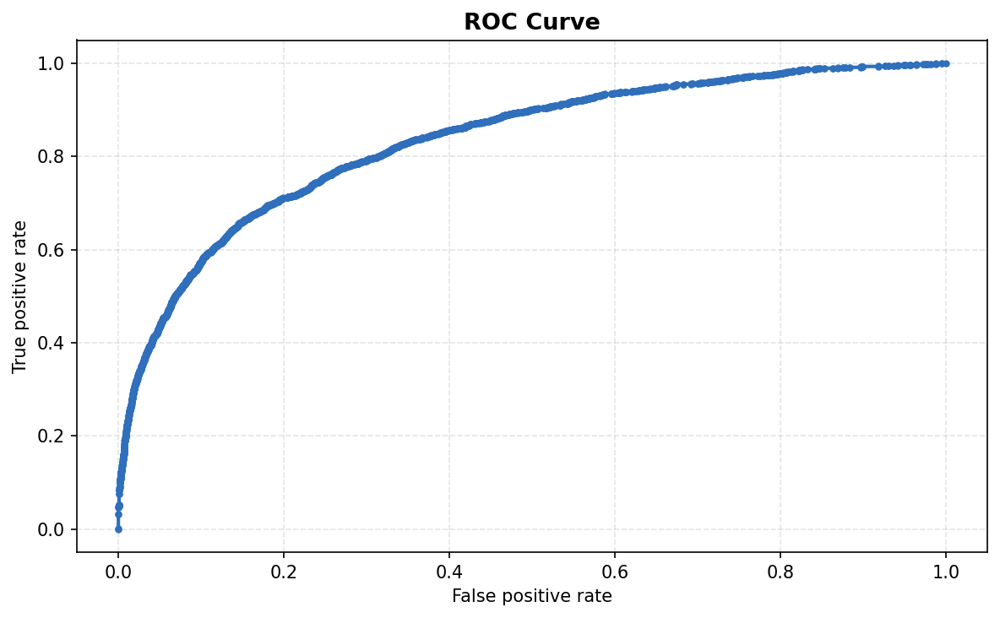
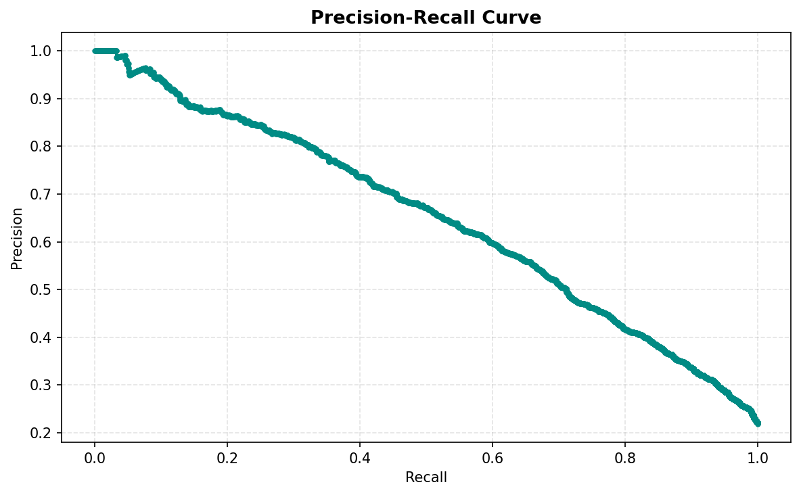
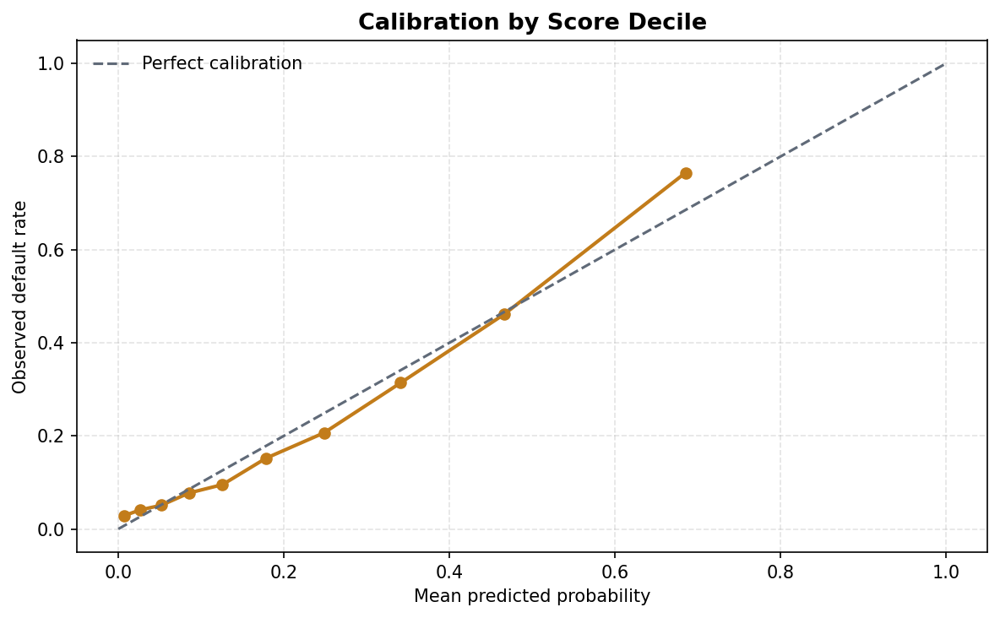
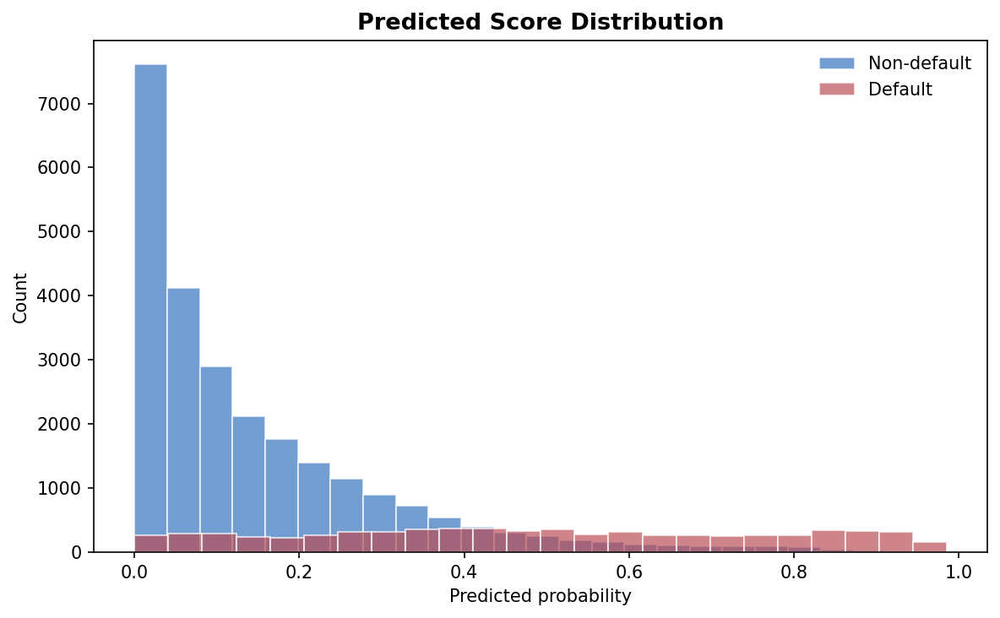
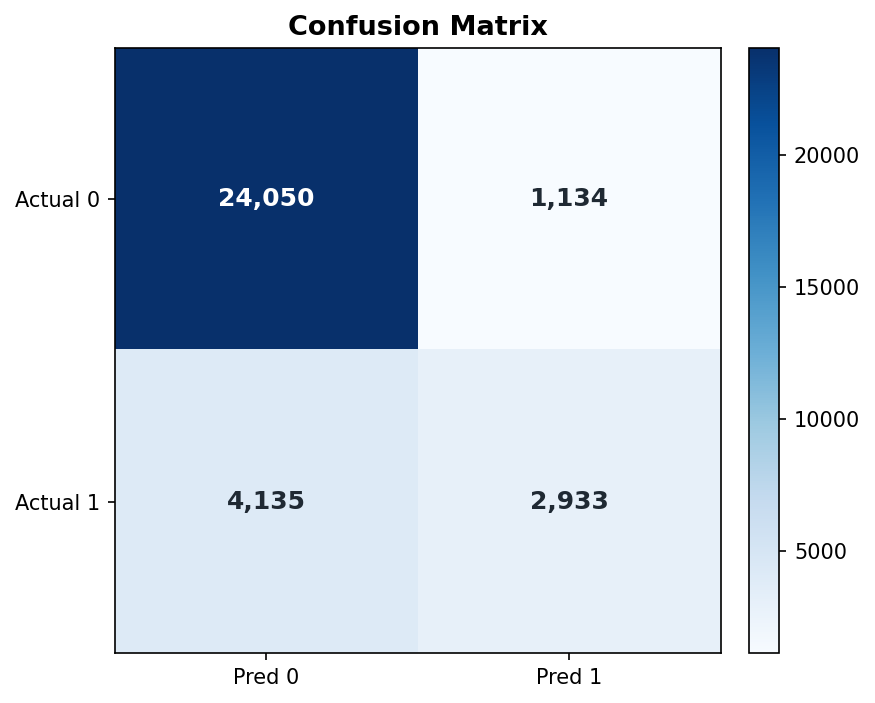
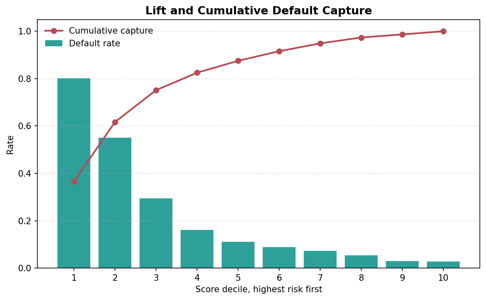
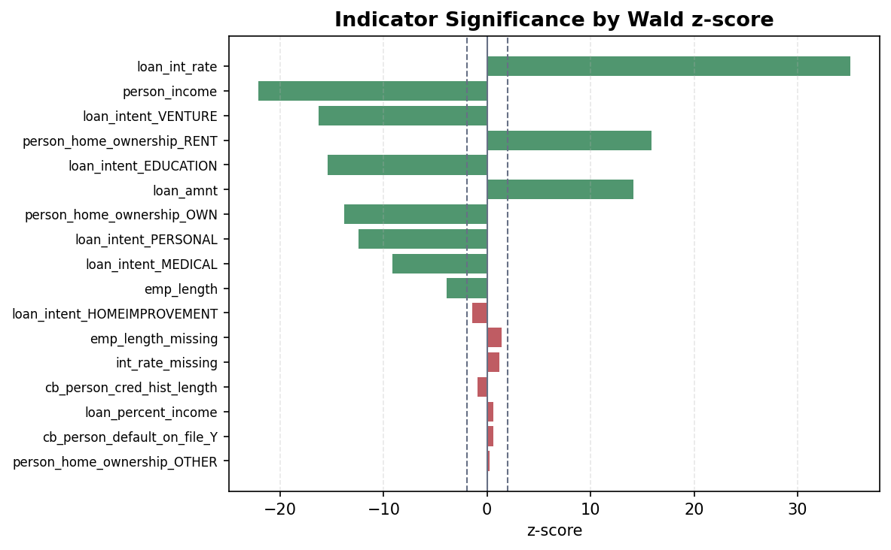
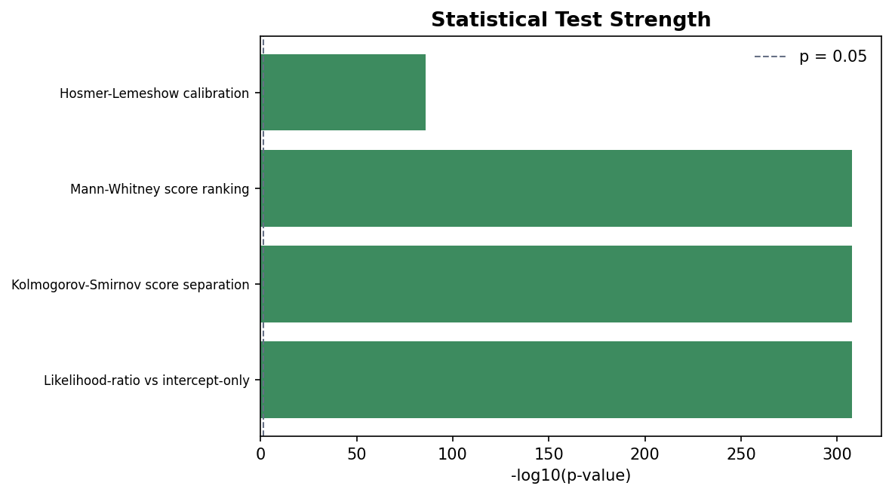
Adjusted grouped-LR model
Model read: ROC AUC is 0.8577, KS is 0.5815, and Brier score is 0.1101.
Statistical tests: Grouped LR and ungrouped Wald screens do not flag removable indicators. Grouped calibration is statistically imperfect; score calibration should be monitored before deployment.
Metrics
| metric | value |
|---|---|
| roc_auc | 0.8577 |
| average_precision | 0.6947 |
| brier_score | 0.1101 |
| ks_statistic | 0.5815 |
| accuracy | 0.8498 |
| precision | 0.7484 |
| recall | 0.4740 |
| f1_score | 0.5804 |
| specificity | 0.9553 |
| threshold | 0.5000 |
| optimal_ks_threshold | 0.2689 |
| log_likelihood | -11,743.7130 |
| null_log_likelihood | -16,959.0376 |
| aic | 23,531.4260 |
| bic | 23,715.8154 |
| mcfadden_r2 | 0.3075 |
Statistical Tests
| test | statistic | p_value | comment |
|---|---|---|---|
| Likelihood-ratio vs intercept-only | 10,430.6492 | 0.0000 | Tests whether the fitted indicators improve log-likelihood over a null model. |
| Kolmogorov-Smirnov score separation | 0.5815 | 0.0000 | Tests whether default and non-default score distributions differ. |
| Mann-Whitney score ranking | 152,664,625.0000 | 0.0000 | Tests whether defaults tend to receive higher scores than non-defaults. |
| Hosmer-Lemeshow calibration | 626.8760 | 0.0000 | Tests grouped calibration; small p-values suggest calibration mismatch. |
Grouped Dummy LR Tests
| group | features | df | lr_statistic | p_value | significant | action |
|---|---|---|---|---|---|---|
| loan_intent | loan_intent_EDUCATION, loan_intent_HOMEIMPROVEMENT, loan_intent_MEDICAL, loan_intent_PERSONAL, loan_intent_VENTURE | 5 | 519.8069 | 0.0000 | True | keep |
| person_home_ownership | person_home_ownership_OTHER, person_home_ownership_OWN, person_home_ownership_RENT | 3 | 1,074.2949 | 0.0000 | True | keep |
| loan_grade | loan_grade_B, loan_grade_C, loan_grade_D, loan_grade_E, loan_grade_F, loan_grade_G | 6 | 1,355.7258 | 0.0000 | True | keep |
Indicator Significance
| term | coefficient | std_error | z_score | p_value | ci_lower | ci_upper | significant |
|---|---|---|---|---|---|---|---|
| loan_grade_F | 0.3027 | 0.2570 | 1.1778 | 0.2389 | -0.2010 | 0.8065 | False |
| loan_grade_G | 0.2036 | 0.3838 | 0.5305 | 0.5958 | -0.5487 | 0.9560 | False |
| person_home_ownership_OTHER | 0.0618 | 0.2857 | 0.2164 | 0.8287 | -0.4982 | 0.6218 | False |
| person_income | -0.0000 | 0.0000 | -48.2816 | 0.0000 | -0.0000 | -0.0000 | True |
| loan_amnt | 0.0001 | 0.0000 | 39.1050 | 0.0000 | 0.0001 | 0.0001 | True |
| loan_intent_VENTURE | -1.1274 | 0.0591 | -19.0909 | 0.0000 | -1.2431 | -1.0116 | True |
| person_home_ownership_RENT | 0.7108 | 0.0387 | 18.3686 | 0.0000 | 0.6350 | 0.7867 | True |
| loan_intent_EDUCATION | -0.8921 | 0.0542 | -16.4516 | 0.0000 | -0.9984 | -0.7858 | True |
| person_home_ownership_OWN | -1.4683 | 0.0930 | -15.7922 | 0.0000 | -1.6505 | -1.2861 | True |
| loan_intent_PERSONAL | -0.7053 | 0.0558 | -12.6297 | 0.0000 | -0.8148 | -0.5959 | True |
| loan_int_rate | 0.2175 | 0.0174 | 12.5345 | 0.0000 | 0.1835 | 0.2515 | True |
| loan_grade_B | -0.5767 | 0.0759 | -7.6003 | 0.0000 | -0.7254 | -0.4279 | True |
| loan_intent_MEDICAL | -0.3828 | 0.0517 | -7.4025 | 0.0000 | -0.4842 | -0.2815 | True |
| loan_grade_C | -0.8281 | 0.1146 | -7.2272 | 0.0000 | -1.0527 | -0.6035 | True |
| person_age | -0.0416 | 0.0058 | -7.1645 | 0.0000 | -0.0530 | -0.0302 | True |
| intercept | -1.2758 | 0.1865 | -6.8404 | 0.0000 | -1.6414 | -0.9103 | True |
| loan_grade_D | 0.8343 | 0.1449 | 5.7596 | 0.0000 | 0.5504 | 1.1182 | True |
| loan_intent_HOMEIMPROVEMENT | 0.3455 | 0.0602 | 5.7357 | 0.0000 | 0.2275 | 0.4636 | True |
| loan_grade_E | 0.9192 | 0.1852 | 4.9627 | 0.0000 | 0.5562 | 1.2822 | True |
| cb_person_cred_hist_length | 0.0395 | 0.0087 | 4.5492 | 0.0000 | 0.0225 | 0.0565 | True |
| emp_length_missing | 0.3667 | 0.0943 | 3.8896 | 0.0001 | 0.1819 | 0.5515 | True |
| emp_length | -0.0165 | 0.0047 | -3.5527 | 0.0004 | -0.0257 | -0.0074 | True |
Calibration Deciles
| decile | mean_pred | actual_rate | count |
|---|---|---|---|
| 0 | 0.0046 | 0.0270 | 3226 |
| 1 | 0.0192 | 0.0316 | 3225 |
| 2 | 0.0397 | 0.0574 | 3225 |
| 3 | 0.0680 | 0.0673 | 3225 |
| 4 | 0.1056 | 0.0921 | 3225 |
| 5 | 0.1573 | 0.1098 | 3225 |
| 6 | 0.2265 | 0.1544 | 3225 |
| 7 | 0.3222 | 0.3048 | 3225 |
| 8 | 0.4811 | 0.5454 | 3225 |
| 9 | 0.7882 | 0.8016 | 3226 |
Lift Summary
| decile | count | defaults | mean_score | default_rate | cumulative_defaults | cumulative_capture_rate |
|---|---|---|---|---|---|---|
| 0 | 3226 | 2586 | 0.7882 | 0.8016 | 2586 | 0.3659 |
| 1 | 3225 | 1759 | 0.4811 | 0.5454 | 4345 | 0.6147 |
| 2 | 3225 | 983 | 0.3222 | 0.3048 | 5328 | 0.7538 |
| 3 | 3225 | 498 | 0.2265 | 0.1544 | 5826 | 0.8243 |
| 4 | 3225 | 354 | 0.1573 | 0.1098 | 6180 | 0.8744 |
| 5 | 3225 | 297 | 0.1056 | 0.0921 | 6477 | 0.9164 |
| 6 | 3225 | 217 | 0.0680 | 0.0673 | 6694 | 0.9471 |
| 7 | 3225 | 185 | 0.0397 | 0.0574 | 6879 | 0.9733 |
| 8 | 3225 | 102 | 0.0192 | 0.0316 | 6981 | 0.9877 |
| 9 | 3226 | 87 | 0.0046 | 0.0270 | 7068 | 1.0000 |
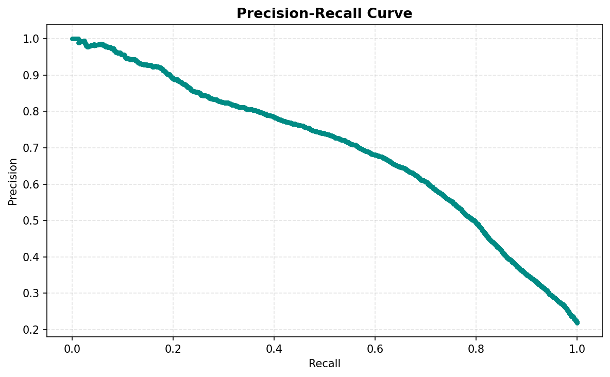
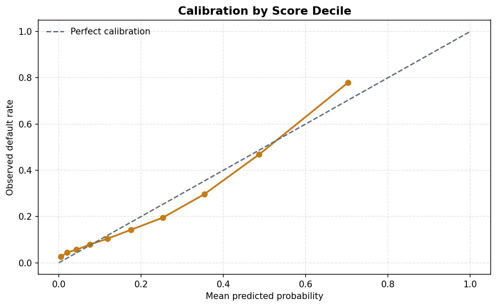
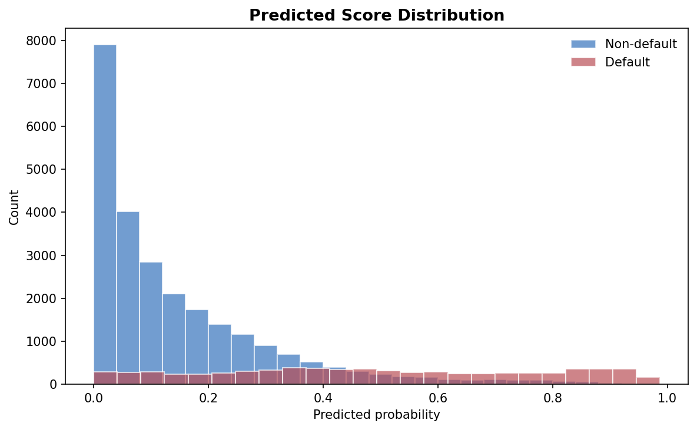
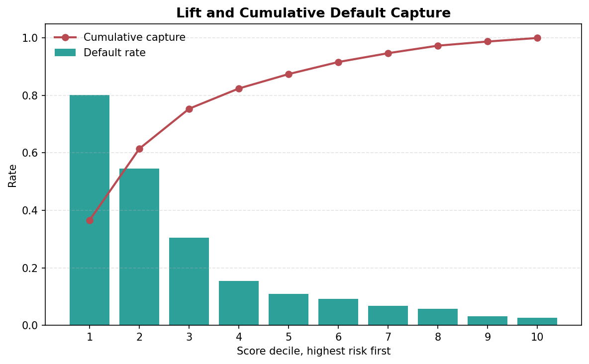
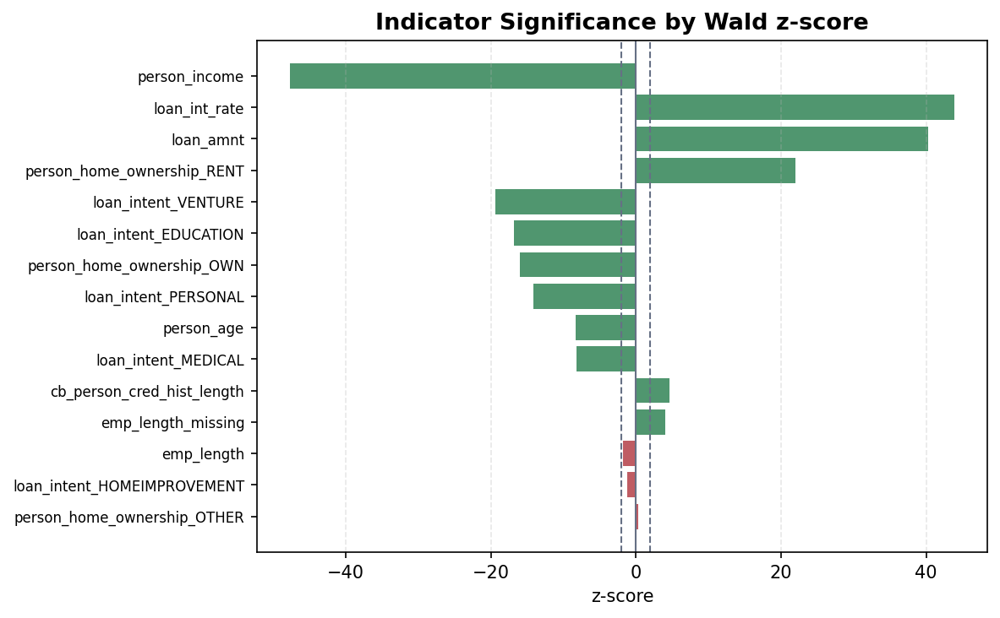
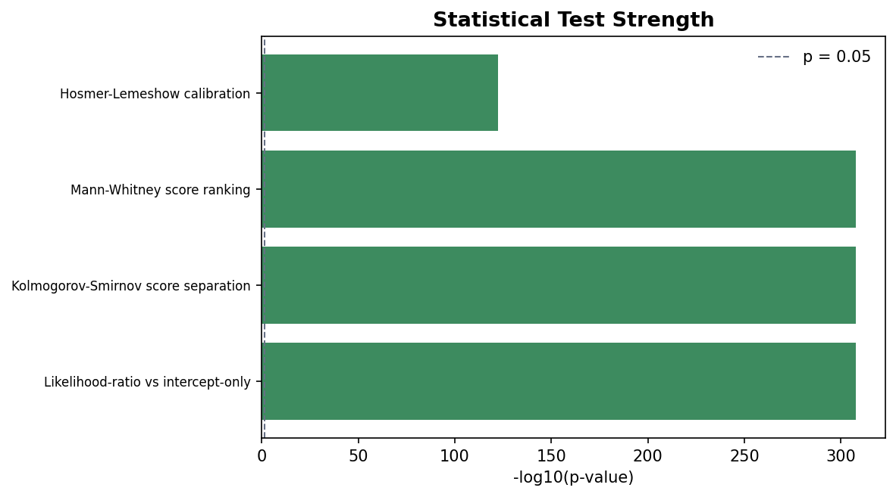
Representative-sample adjusted model
Model read: ROC AUC is 0.8567, KS is 0.5796, and Brier score is 0.1108.
Statistical tests: Grouped LR and ungrouped Wald screens do not flag removable indicators. Grouped calibration is statistically imperfect; score calibration should be monitored before deployment.
Metrics
| metric | value |
|---|---|
| roc_auc | 0.8567 |
| average_precision | 0.6902 |
| brier_score | 0.1108 |
| ks_statistic | 0.5796 |
| accuracy | 0.8490 |
| precision | 0.7500 |
| recall | 0.4665 |
| f1_score | 0.5752 |
| specificity | 0.9564 |
| threshold | 0.5000 |
| optimal_ks_threshold | 0.2810 |
| log_likelihood | -11,824.2217 |
| null_log_likelihood | -16,959.0376 |
| aic | 23,692.4433 |
| bic | 23,876.8327 |
| mcfadden_r2 | 0.3028 |
Statistical Tests
| test | statistic | p_value | comment |
|---|---|---|---|
| Likelihood-ratio vs intercept-only | 10,269.6319 | 0.0000 | Tests whether the fitted indicators improve log-likelihood over a null model. |
| Kolmogorov-Smirnov score separation | 0.5796 | 0.0000 | Tests whether default and non-default score distributions differ. |
| Mann-Whitney score ranking | 152,488,427.0000 | 0.0000 | Tests whether defaults tend to receive higher scores than non-defaults. |
| Hosmer-Lemeshow calibration | 790.3493 | 0.0000 | Tests grouped calibration; small p-values suggest calibration mismatch. |
Grouped Dummy LR Tests
No rows to display.
Indicator Significance
No rows to display.
Calibration Deciles
| decile | mean_pred | actual_rate | count |
|---|---|---|---|
| 0 | 0.0049 | 0.0316 | 3226 |
| 1 | 0.0210 | 0.0344 | 3225 |
| 2 | 0.0431 | 0.0505 | 3225 |
| 3 | 0.0715 | 0.0688 | 3225 |
| 4 | 0.1083 | 0.0927 | 3225 |
| 5 | 0.1584 | 0.1020 | 3225 |
| 6 | 0.2258 | 0.1647 | 3225 |
| 7 | 0.3182 | 0.2893 | 3225 |
| 8 | 0.4765 | 0.5746 | 3225 |
| 9 | 0.7900 | 0.7827 | 3226 |
Lift Summary
| decile | count | defaults | mean_score | default_rate | cumulative_defaults | cumulative_capture_rate |
|---|---|---|---|---|---|---|
| 0 | 3226 | 2525 | 0.7900 | 0.7827 | 2525 | 0.3572 |
| 1 | 3225 | 1853 | 0.4765 | 0.5746 | 4378 | 0.6194 |
| 2 | 3225 | 933 | 0.3182 | 0.2893 | 5311 | 0.7514 |
| 3 | 3225 | 531 | 0.2258 | 0.1647 | 5842 | 0.8265 |
| 4 | 3225 | 329 | 0.1584 | 0.1020 | 6171 | 0.8731 |
| 5 | 3225 | 299 | 0.1083 | 0.0927 | 6470 | 0.9154 |
| 6 | 3225 | 222 | 0.0715 | 0.0688 | 6692 | 0.9468 |
| 7 | 3225 | 163 | 0.0431 | 0.0505 | 6855 | 0.9699 |
| 8 | 3225 | 111 | 0.0210 | 0.0344 | 6966 | 0.9856 |
| 9 | 3226 | 102 | 0.0049 | 0.0316 | 7068 | 1.0000 |
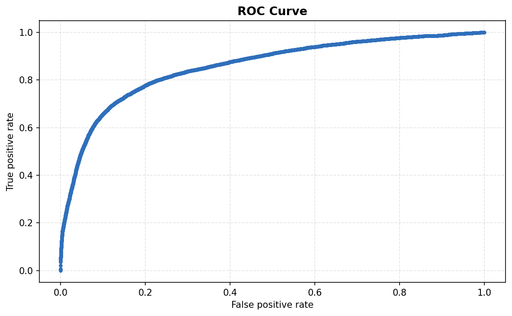
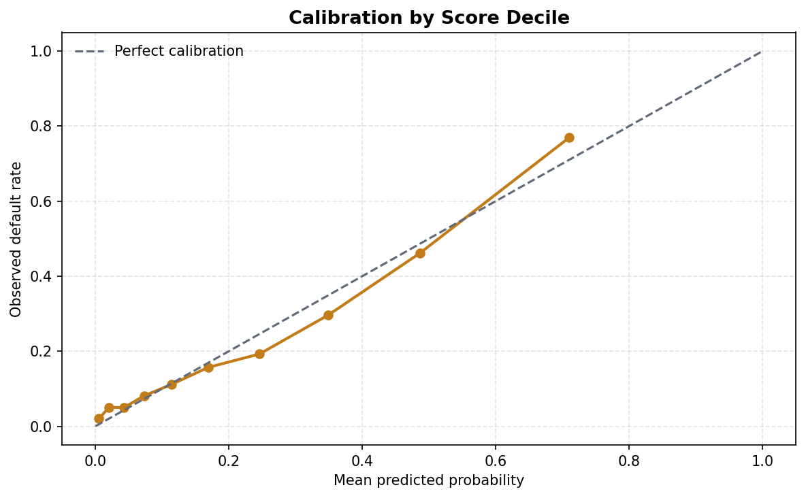
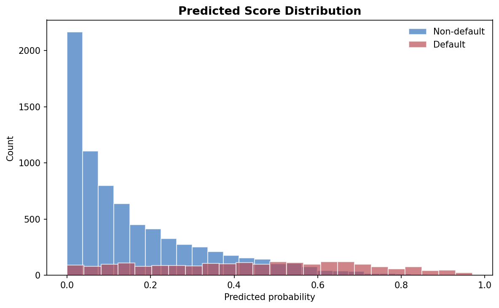
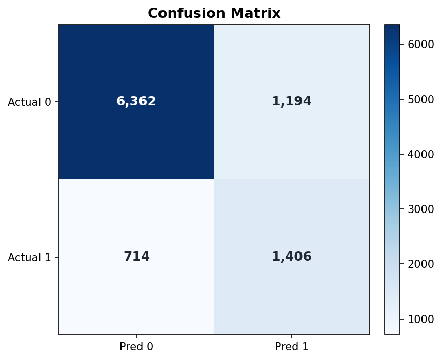
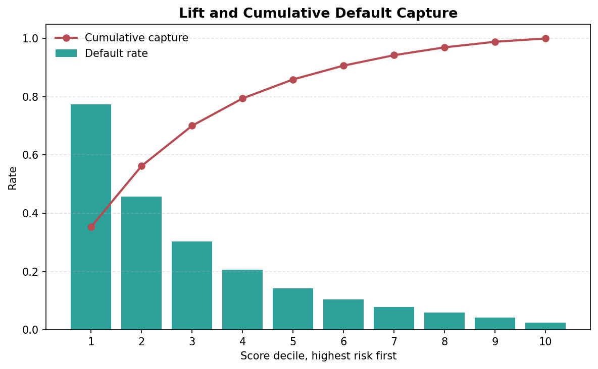
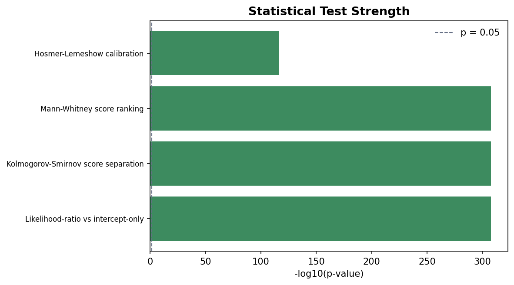
Weighted adjusted model
Model read: ROC AUC is 0.7666, KS is 0.4240, and Brier score is 0.1960.
Statistical tests: Grouped LR and ungrouped Wald screens do not flag removable indicators. Grouped calibration is statistically imperfect; score calibration should be monitored before deployment.
Metrics
| metric | value |
|---|---|
| roc_auc | 0.7666 |
| average_precision | 0.4583 |
| brier_score | 0.1960 |
| ks_statistic | 0.4240 |
| accuracy | 0.7009 |
| precision | 0.4000 |
| recall | 0.7292 |
| f1_score | 0.5166 |
| specificity | 0.6930 |
| threshold | 0.5000 |
| optimal_ks_threshold | 0.5047 |
| log_likelihood | -18,527.5979 |
| null_log_likelihood | -16,959.0376 |
| aic | 37,099.1958 |
| bic | 37,283.5851 |
| mcfadden_r2 | -0.0925 |
Statistical Tests
| test | statistic | p_value | comment |
|---|---|---|---|
| Likelihood-ratio vs intercept-only | 0.0000 | 1.0000 | Tests whether the fitted indicators improve log-likelihood over a null model. |
| Kolmogorov-Smirnov score separation | 0.4240 | 0.0000 | Tests whether default and non-default score distributions differ. |
| Mann-Whitney score ranking | 136,448,711.0000 | 0.0000 | Tests whether defaults tend to receive higher scores than non-defaults. |
| Hosmer-Lemeshow calibration | 7,861.1123 | 0.0000 | Tests grouped calibration; small p-values suggest calibration mismatch. |
Grouped Dummy LR Tests
No rows to display.
Indicator Significance
No rows to display.
Calibration Deciles
| decile | mean_pred | actual_rate | count |
|---|---|---|---|
| 0 | 0.0671 | 0.0443 | 3226 |
| 1 | 0.1772 | 0.0592 | 3225 |
| 2 | 0.2631 | 0.0639 | 3225 |
| 3 | 0.3374 | 0.0974 | 3225 |
| 4 | 0.4041 | 0.1321 | 3225 |
| 5 | 0.4678 | 0.1957 | 3225 |
| 6 | 0.5321 | 0.2716 | 3225 |
| 7 | 0.6002 | 0.3662 | 3225 |
| 8 | 0.6774 | 0.4561 | 3225 |
| 9 | 0.7996 | 0.5050 | 3226 |
Lift Summary
| decile | count | defaults | mean_score | default_rate | cumulative_defaults | cumulative_capture_rate |
|---|---|---|---|---|---|---|
| 0 | 3226 | 1629 | 0.7996 | 0.5050 | 1629 | 0.2305 |
| 1 | 3225 | 1471 | 0.6774 | 0.4561 | 3100 | 0.4386 |
| 2 | 3225 | 1181 | 0.6002 | 0.3662 | 4281 | 0.6057 |
| 3 | 3225 | 876 | 0.5321 | 0.2716 | 5157 | 0.7296 |
| 4 | 3225 | 631 | 0.4678 | 0.1957 | 5788 | 0.8189 |
| 5 | 3225 | 426 | 0.4041 | 0.1321 | 6214 | 0.8792 |
| 6 | 3225 | 314 | 0.3374 | 0.0974 | 6528 | 0.9236 |
| 7 | 3225 | 206 | 0.2631 | 0.0639 | 6734 | 0.9527 |
| 8 | 3225 | 191 | 0.1772 | 0.0592 | 6925 | 0.9798 |
| 9 | 3226 | 143 | 0.0671 | 0.0443 | 7068 | 1.0000 |
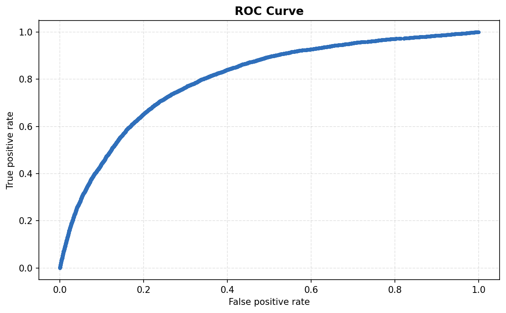
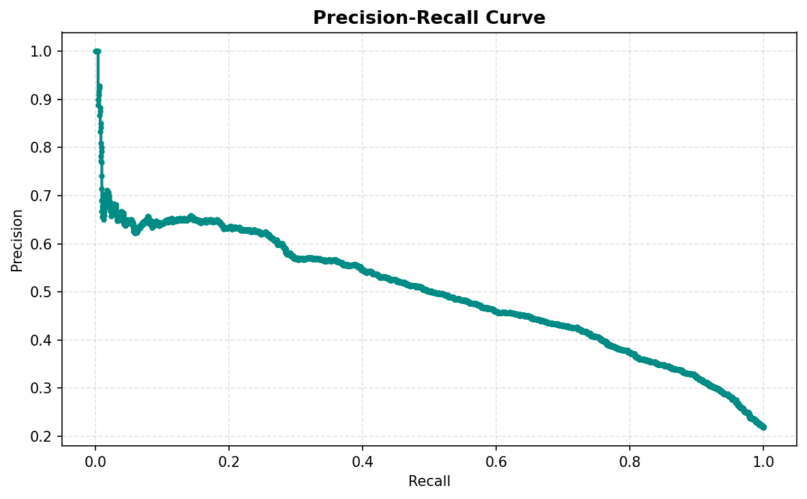
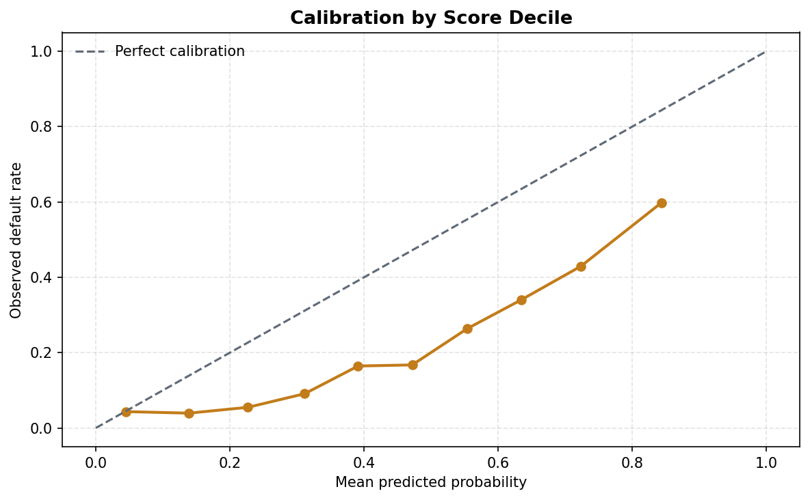
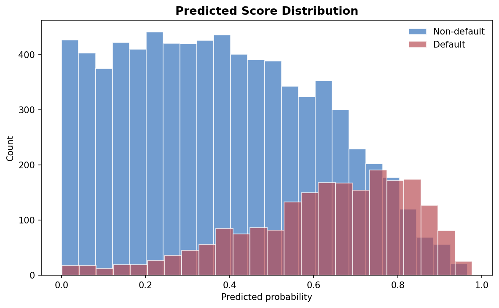
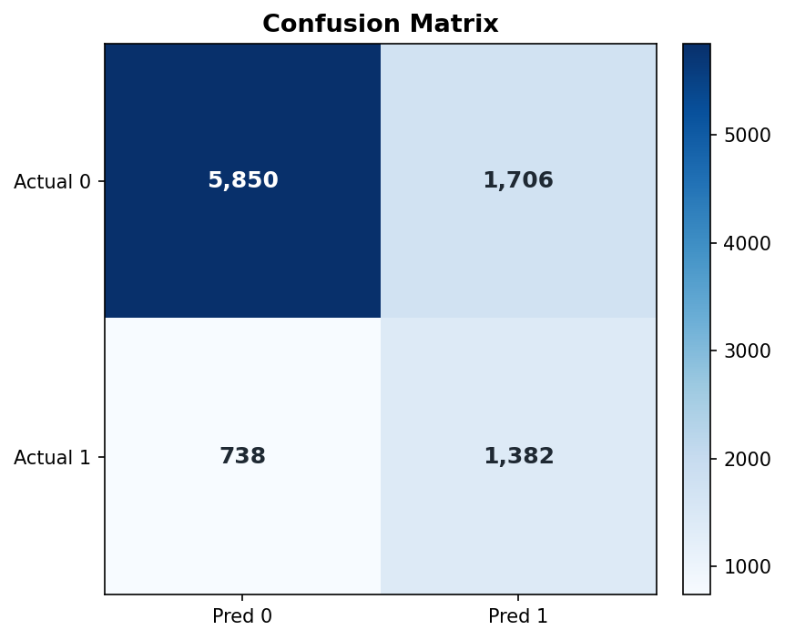
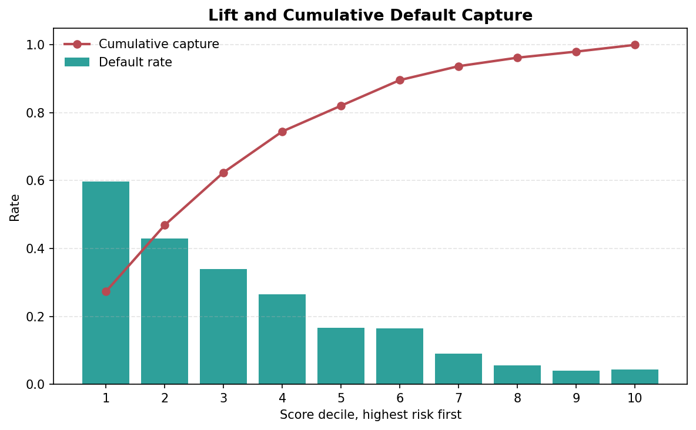
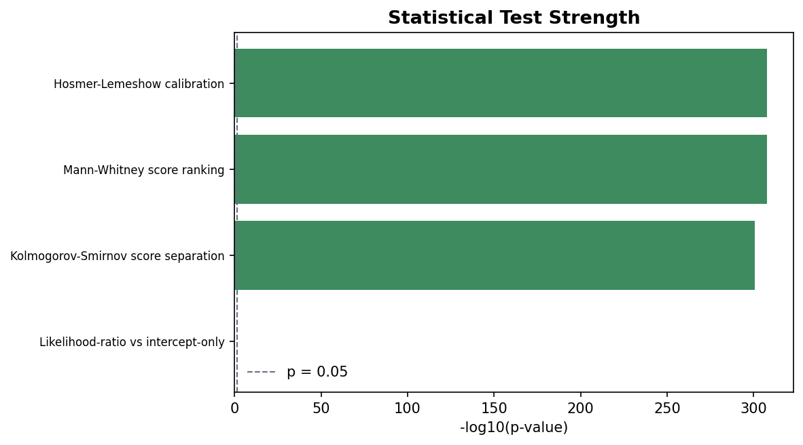
Model read: ROC AUC is 0.8586, KS is 0.5807, and Brier score is 0.1098.
Statistical tests: 1 dummy-variable groups fail the LR screen and are candidates for grouped removal. 2 ungrouped indicators fail the Wald screen. Grouped calibration is statistically imperfect; score calibration should be monitored before deployment.